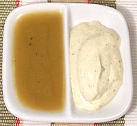

 |
Italian DressingNorth American | ||||
| Makes: Effort: Sched: DoAhead: |
1-1/2 cup ** 20 min Yes |
In North America two different concoctions are called "Italian Dressing", neither of which is likely used in Italy. | |||
| Many North American recipes call for "Italian Dressing", unfortunately without specifying which one, so here we present recipes for both - take your pick. I will call them "Regular" and "Creamy". | |||||
|
---- 1 1/2 1 1/2 1/4 1/2 3/4 1/4 1/2 3/4 |
--- c c cl t t t t t t t |
Regular ItalianOlive Oil (1) Wine Vinegar, red Garlic (very fresh) Onion Celery seed Salt Parsley Flake Onion Powder Italian Seasoning (2) Sesame seed |
Make: - (20 min) A mini-prep food processor is perfect for this job.
|
|
---- 2 ---- 2 1 2 2 1 1 1/2 1/4 ---- |
--- c --- cl T T T t t t t --- |
Creamy ItalianMayonnaise (3) -- Seasonings Garlic (very fresh) Parmesan Cheese Wine Vinegar, red Olive Oil (1) Italian Seasoning (2) Sugar Salt Pepper --------------- |
Make: - (20 min)
|